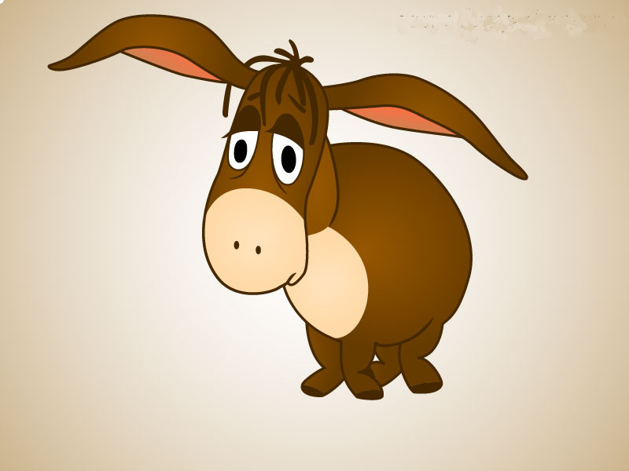

Винни-Пух и все-все-все. Продолжение 3.
Алан Милн
Глава четвертая, в которой Иа-Иа теряет хвост, а Пух находит
Старый серый ослик Иа-Иа стоял один-одинешенек в заросшем чертополохом уголке леса, широко расставив передние ноги и свесив голову набок, и думал о Серьезных Вещах. Иногда он грустно думал: "Почему?", а иногда: "По какой причине?", а иногда он думал даже так: "Какой же отсюда следует вывод?" И неудивительно, что порой он вообще переставал понимать, о чем же он, собственно, думает.
Поэтому, сказать вам по правде, услышав тяжелые шаги Винни-Пуха, Иа очень обрадовался, что может на минутку перестать думать и просто поздороваться.
- Как самочувствие? - по обыкновению уныло спросил он.
- А как твое? - спросил Винни-Пух.
Иа покачал головой.
- Не очень как! - сказал он. - Или даже совсем никак. Мне кажется, я уже очень давно не чувствовал себя как.
- Ай-ай-ай, - сказал Пух, - очень грустно! Дай-ка я на тебя посмотрю.
Иа-Иа продолжал стоять, понуро глядя в землю, и Винни-Пух обошел вокруг него.
- Ой, что это случилось с твоим хвостом? - спросил он удивленно.
- А что с ним случилось? - сказал Иа-Иа.
- Его нет!
- Ты не ошибся?
- Хвост или есть, или его нет. По-моему, тут нельзя ошибиться. А твоего хвоста нет.
- А что же тогда там есть?
- Ничего.
- Ну-ка, посмотрим, - сказал Иа-Иа.
И он медленно повернулся к тому месту, где недавно был его хвост; затем, заметив, что ему никак не удается его догнать, он стал поворачиваться в обратную сторону, пока не вернулся туда, откуда начал, а тогда он опустил голову и посмотрел снизу и наконец сказал, глубоко и печально вздыхая:
- Кажется, ты прав.
- Конечно, я прав, - сказал Пух.
- Это вполне естественно, - грустно сказал Иа-Иа. - Теперь все понятно. Удивляться не приходится.
- Ты, наверно, его где-нибудь позабыл, - сказал Винни-Пух.
- Наверно, его кто-нибудь утащил... - сказал Иа-Иа. - Чего от них ждать! - добавил он после большой паузы.
Пух чувствовал, что он должен сказать что-нибудь полезное, но не мог придумать, что именно. И он решил вместо этого сделать что-нибудь полезное.
- Иа-Иа, - торжественно произнес он, - я, Винни-Пух, обещаю тебе найти твой хвост.
- Спасибо, Пух, - сказал Иа. - Ты настоящий друг. Не то что некоторые!
И Винни-Пух отправился на поиски хвоста.
Он вышел в путь чудесным весенним утром. Маленькие прозрачные облачка весело играли на синем небе. Они-то набегали на солнышко, словно хотели его закрыть, то поскорее убегали, чтобы дать и другим побаловаться.
А солнце весело светило, не обращая на них никакого внимания, и сосна, которая носила свои иголки круглый год не снимая, казалась старой и потрепанной рядом с березками, надевшими новые зеленые кружева. Винни шагал мимо сосен и елок, шагал по склонам, заросшим можжевельником и репейником, шагал по крутым берегам ручьев и речек, шагал среди груд камней и снова среди зарослей, и вот наконец, усталый и голодный, он вошел в Дремучий Лес, потому что именно там, в Дремучем Лесу, жила Сова.
"А если кто-нибудь что-нибудь о чем-нибудь знает, - сказал медвежонок про себя, - то это, конечно, Сова. Или я не Винни-Пух, - сказал он. - А я - он, - добавил Винни-Пух. - Значит, все в порядке! "
Сова жила в великолепном замке "Каштаны". Да, это был не дом, а настоящий замок. Во всяком случае, так казалось медвежонку, потому что на двери замка был и звонок с кнопкой, и колокольчик со шнурком. Под звонком было прибито объявление:
ПРОШУ НАЖАТЬ ЭСЛИ НЕ АТКРЫВАЮТ
А под колокольчиком другое объявление:
ПРОШУ ПАДЕРГАТЬ ЭСЛИ НЕ АТКРЫВАЮТ
Оба эти объявления написал Кристофер Робин, который один во всем Лесу умел писать. Даже Сова, хотя она была очень-очень умная и умела читать и даже подписывать свое имя - Сава, и то не сумела бы правильно написать такие трудные слова.
Винни-Пух внимательно прочел оба объявления, сначала слева направо, а потом - на тот случай, если он что-нибудь пропустил, - справа налево.
Потом, для верности, он нажал кнопку звонка и постучал по ней, а потом он подергал шнурок колокольчика и крикнул очень громким голосом:
- Сова! Открывай! Пришел Медведь.
Дверь открылась, и Сова выглянула наружу.
- Здравствуй, Пух, - сказала она. - Какие новости?
- Грустные и ужасные, - сказал Пух, - потому что Иа-Иа, мой старый друг, потерял свой хвост, и он очень убивается о нем. Будь так добра, скажи мне, пожалуйста, как мне его найти?
- Ну, - сказала Сова, - обычная процедура в таких случаях нижеследующая...
- Что значит Бычья Цедура? - сказал Пух. - Ты не забывай, что у меня в голове опилки и длинные слова меня только огорчают.
- Ну, это означает то, что надо сделать.
- Пока она означает это, я не возражаю, - смиренно сказал Пух.
- А сделать нужно следующее: во-первых, сообщи в прессу. Потом...
- Будь здорова, - сказал Пух, подняв лапу. - Так что мы должны сделать с этой... как ты сказала? Ты чихнула, когда собиралась сказать.
- Я не чихала.
- Нет, Сова, ты чихнула.
- Прости, пожалуйста, Пух, но я не чихала. Нельзя же чихнуть и не знать, что ты чихнул.
- Ну и нельзя знать, что кто-то чихнул, когда никто не чихал.
- Я начала говорить: сперва сообщи...
- Ну вот ты опять! Будь здорова, - грустно сказал Винни-Пух.
- Сообщи в печать, - очень громко и внятно сказала Сова. - Дай в газету объявление и пообещай награду. Надо написать, что мы дадим что-нибудь хорошенькое тому, кто найдет хвост Иа-Иа.
- Понятно, понятно, - сказал Пух, кивая головой. - Кстати, насчет "чего-нибудь хорошенького", - продолжал он сонно, - я обычно как раз в это время не прочь бы чем-нибудь хорошенько подкре... - И он покосился на буфет, стоявший в углу комнаты Совы. - Скажем, ложечкой сгущенного молока или еще чем-нибудь, например, одним глоточком меду...
- Ну вот, - сказала Сова, - мы, значит, напишем наше объявление, и его расклеят по всему Лесу.
"Ложечка меду, - пробормотал медвежонок про себя, - или... или уж нет, на худой конец".
И он глубоко вздохнул и стал очень стараться слушать то, что говорила Сова.
А Сова говорила и говорила какие-то ужасно длинные слова, и слова эти становились все длиннее и длиннее... Наконец она вернулась туда, откуда начала, и стала объяснять, что написать это объявление должен Кристофер Робин.
- Это ведь он написал объявления на моей двери. Ты их видел, Пух?
Пух уже довольно давно говорил по очереди то "да", то "нет" на все, что бы ни сказала Сова. И так как в последний раз он говорил "да, да", то на этот раз он сказал: "Нет, нет, никогда!" - хотя не имел никакого понятия, о чем идет речь.
- Как, ты их не видел? - спросила Сова, явно удивившись. - Пойдем посмотрим на них.
Они вышли наружу, и Пух посмотрел на звонок и на объявление под ним и взглянул на колокольчик и шнурок, который шел от него, и чем больше он смотрел на шнурок колокольчика, тем больше он чувствовал, что он где-то видел что-то очень похожее... Где-то совсем в другом месте, когда-то раньше...
- Красивый шнурок, правда? - сказала Сова.
Пух кивнул.
- Он мне что-то напоминает, - сказал он, - но я не могу вспомнить что. Где ты его взяла?
- Я как-то шла по лесу, а он висел на кустике, и я сперва подумала, что там кто-нибудь живет, и позвонила, и ничего не случилось, а потом я позвонила очень громко, и он оторвался, и, так как он, по-моему, был никому не нужен, я взяла его домой и...
- Сова, - сказал Пух торжественно, - он кому-то очень нужен.
- Кому?
- Иа. Моему дорогому другу Иа-Иа. Он... он очень любил его.
- Любил его?
- Был привязан к нему, - грустно сказал Винни-Пух.
С этими словами он снял шнурок с крючка и отнес его хозяину, то есть Иа, а когда Кристофер Робин прибил хвост на место, Иа-Иа принялся носиться по Лесу, с таким восторгом размахивая хвостом, что у Винни-Пуха защекотало во всем теле и ему пришлось поскорее побежать домой и немножко подкрепиться.
Спустя полчаса, утирая губы, он гордо спел:
Кто нашел хвост?
Я, Винни-Пух!
Около двух
(Только по-правдашнему было около одиннадцати!)
Я нашел хвост!
Продолжение следует.